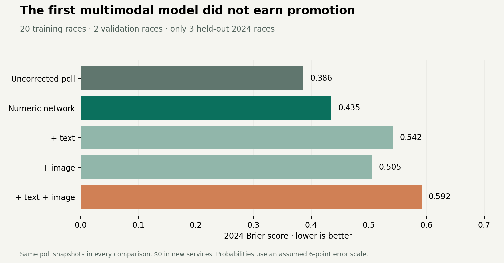

Forecast the race.
Understand the reward.
A public-data forecasting workspace with an explicit scoring decision, traceable evidence, and a separate record of what still needs verification.
Research draft · 2026-10-21 · $0 in new servicesWhy a long shot can be the higher-scoring pick
Move the estimates to see the expected competition points for either pick. This comparison is for one hypothetical two-outcome race.
Race-by-race research picks
These exploratory picks maximize expected points under the current model. They are not a finished contest entry. A selected candidate can have less than a 50% chance of winning.
| Race | Research pick | Market proxy | Forecast chance | Expected points | Evidence | ||||||||||||||||||||
|---|---|---|---|---|---|---|---|---|---|---|---|---|---|---|---|---|---|---|---|---|---|---|---|---|---|
| AK Alaska |
Republican party Polls + historical baseline |
24.5% | 40.6% | 0.824 | Sources & checks9 pollsters · latest 2026-10-10 Model favorite: Democratic party
All probabilities and strategies remain exploratory. Benchmark prices are not official contest weights. | ||||||||||||||||||||
| AL Alabama |
Barry Moore Polls + historical baseline |
98.3% | >99.9% | 0.025 | Sources & checks1 pollsters · latest 2026-09-25 Model favorite: Barry Moore
All probabilities and strategies remain exploratory. Benchmark prices are not official contest weights. | ||||||||||||||||||||
| AR Arkansas |
Hallie Shoffner Polls + historical baseline |
4.7% | 3.8% | 0.166 | Sources & checks4 pollsters · latest 2026-10-04 Model favorite: Tom Cotton
All probabilities and strategies remain exploratory. Benchmark prices are not official contest weights. | ||||||||||||||||||||
| CO Colorado |
Mark Baisley Market proxy; no recent poll model |
0.9% | 0.9% | 0.057 | Sources & checksFundamentals / source review Model favorite: John Hickenlooper
All probabilities and strategies remain exploratory. Benchmark prices are not official contest weights. | ||||||||||||||||||||
| DE Delaware |
Michael Katz Market proxy; no recent poll model |
2.2% | 2.2% | 0.123 | Sources & checksFundamentals / source review Model favorite: Chris Coons
All probabilities and strategies remain exploratory. Benchmark prices are not official contest weights. | ||||||||||||||||||||
| FL Florida |
Angie Nixon Polls + historical baseline |
10.5% | 10.8% | 0.351 | Sources & checks9 pollsters · latest 2026-10-07 Model favorite: Ashley Moody
All probabilities and strategies remain exploratory. Benchmark prices are not official contest weights. | ||||||||||||||||||||
| GA Georgia |
Mike Collins Polls + historical baseline |
4.7% | 2.4% | 0.107 | Sources & checks7 pollsters · latest 2026-10-08 Model favorite: Jon Ossoff
All probabilities and strategies remain exploratory. Benchmark prices are not official contest weights. | ||||||||||||||||||||
| IA Iowa |
Josh Turek Polls + historical baseline |
42.5% | 54.7% | 0.675 | Sources & checks17 pollsters · latest 2026-10-12 Model favorite: Josh Turek
All probabilities and strategies remain exploratory. Benchmark prices are not official contest weights. | ||||||||||||||||||||
| ID Idaho |
Todd Achilles Independent race; extra review |
5.5% | 15.2% | 0.636 | Sources & checks4 pollsters · latest 2026-09-30 Model favorite: Jim Risch
All probabilities and strategies remain exploratory. Benchmark prices are not official contest weights. | ||||||||||||||||||||
| IL Illinois |
Juliana Stratton Polls + historical baseline |
98.4% | 99.8% | 0.023 | Sources & checks1 pollsters · latest 2026-10-01 Model favorite: Juliana Stratton
All probabilities and strategies remain exploratory. Benchmark prices are not official contest weights. | ||||||||||||||||||||
| KS Kansas |
Adam Hamilton Polls + historical baseline |
39.5% | 62.1% | 0.833 | Sources & checks10 pollsters · latest 2026-10-14 Model favorite: Adam Hamilton
All probabilities and strategies remain exploratory. Benchmark prices are not official contest weights. | ||||||||||||||||||||
| KY Kentucky |
Needs market mapping Needs source check |
— | — | — | Sources & checks1 pollsters · latest 2026-08-27 Model favorite: unavailable
All probabilities and strategies remain exploratory. Benchmark prices are not official contest weights. | ||||||||||||||||||||
| LA Louisiana |
Needs market mapping Needs source check |
— | — | — | Sources & checks1 pollsters · latest 2026-09-19 Model favorite: unavailable
All probabilities and strategies remain exploratory. Benchmark prices are not official contest weights. | ||||||||||||||||||||
| MA Massachusetts |
Ed Markey Polls + historical baseline |
98.3% | >99.9% | 0.025 | Sources & checks3 pollsters · latest 2026-09-22 Model favorite: Ed Markey
All probabilities and strategies remain exploratory. Benchmark prices are not official contest weights. | ||||||||||||||||||||
| ME Maine |
Troy Jackson Polls + historical baseline |
63.5% | 74.1% | 0.485 | Sources & checks19 pollsters · latest 2026-10-14 Model favorite: Troy Jackson
All probabilities and strategies remain exploratory. Benchmark prices are not official contest weights. | ||||||||||||||||||||
| MI Michigan |
Abdul El-Sayed Polls + historical baseline |
68.5% | 75.5% | 0.412 | Sources & checks28 pollsters · latest 2026-10-10 Model favorite: Abdul El-Sayed
All probabilities and strategies remain exploratory. Benchmark prices are not official contest weights. | ||||||||||||||||||||
| MN Minnesota |
Michele Tafoya Polls + historical baseline |
12.5% | 16.1% | 0.483 | Sources & checks12 pollsters · latest 2026-10-12 Model favorite: Peggy Flanagan
All probabilities and strategies remain exploratory. Benchmark prices are not official contest weights. | ||||||||||||||||||||
| MS Mississippi |
Scott Colom Polls + historical baseline |
9.7% | 18.6% | 0.625 | Sources & checks1 pollsters · latest 2026-08-15 Model favorite: Cindy Hyde-Smith
All probabilities and strategies remain exploratory. Benchmark prices are not official contest weights. | ||||||||||||||||||||
| MT Montana |
Seth Bodnar Independent race; extra review |
8.0% | 33.2% | 1.214 | Sources & checks7 pollsters · latest 2026-09-24 Model favorite: Kurt Alme
All probabilities and strategies remain exploratory. Benchmark prices are not official contest weights. | ||||||||||||||||||||
| NC North Carolina |
Michael Whatley Polls + historical baseline |
4.0% | 1.9% | 0.090 | Sources & checks17 pollsters · latest 2026-10-10 Model favorite: Roy Cooper
All probabilities and strategies remain exploratory. Benchmark prices are not official contest weights. | ||||||||||||||||||||
| NE Nebraska |
Dan Osborn Independent race; extra review |
28.5% | 41.1% | 0.745 | Sources & checks6 pollsters · latest 2026-10-05 Model favorite: Pete Ricketts
All probabilities and strategies remain exploratory. Benchmark prices are not official contest weights. | ||||||||||||||||||||
| NH New Hampshire |
John E. Sununu Polls + historical baseline |
10.5% | 6.9% | 0.225 | Sources & checks10 pollsters · latest 2026-10-05 Model favorite: Chris Pappas
All probabilities and strategies remain exploratory. Benchmark prices are not official contest weights. | ||||||||||||||||||||
| NJ New Jersey |
Justin Murphy Market proxy; no recent poll model |
3.7% | 3.7% | 0.176 | Sources & checksFundamentals / source review Model favorite: Cory Booker
All probabilities and strategies remain exploratory. Benchmark prices are not official contest weights. | ||||||||||||||||||||
| NM New Mexico |
Ben Ray Luján Polls + historical baseline |
96.4% | >99.9% | 0.054 | Sources & checks2 pollsters · latest 2026-09-30 Model favorite: Ben Ray Luján
All probabilities and strategies remain exploratory. Benchmark prices are not official contest weights. | ||||||||||||||||||||
| OH Ohio |
Sherrod Brown Polls + historical baseline |
66.5% | 76.0% | 0.447 | Sources & checks16 pollsters · latest 2026-10-06 Model favorite: Sherrod Brown
All probabilities and strategies remain exploratory. Benchmark prices are not official contest weights. | ||||||||||||||||||||
| OK Oklahoma |
Kevin Hern Polls + historical baseline |
97.4% | 99.6% | 0.038 | Sources & checks1 pollsters · latest 2026-08-06 Model favorite: Kevin Hern
All probabilities and strategies remain exploratory. Benchmark prices are not official contest weights. | ||||||||||||||||||||
| OR Oregon |
David Brock Smith Market proxy; no recent poll model |
1.6% | 1.6% | 0.093 | Sources & checksFundamentals / source review Model favorite: Jeff Merkley
All probabilities and strategies remain exploratory. Benchmark prices are not official contest weights. | ||||||||||||||||||||
| RI Rhode Island |
Jack Reed Polls + historical baseline |
98.6% | >99.9% | 0.020 | Sources & checks1 pollsters · latest 2026-09-21 Model favorite: Jack Reed
All probabilities and strategies remain exploratory. Benchmark prices are not official contest weights. | ||||||||||||||||||||
| SC South Carolina |
Annie Andrews Polls + historical baseline |
17.5% | 29.2% | 0.735 | Sources & checks4 pollsters · latest 2026-10-08 Model favorite: Darline Graham
All probabilities and strategies remain exploratory. Benchmark prices are not official contest weights. | ||||||||||||||||||||
| SD South Dakota |
Brian Bengs Independent race; extra review |
6.0% | 36.2% | 1.467 | Sources & checks4 pollsters · latest 2026-09-28 Model favorite: Mike Rounds
All probabilities and strategies remain exploratory. Benchmark prices are not official contest weights. | ||||||||||||||||||||
| TN Tennessee |
Bill Hagerty Polls + historical baseline |
95.8% | 99.7% | 0.062 | Sources & checks1 pollsters · latest 2026-08-26 Model favorite: Bill Hagerty
All probabilities and strategies remain exploratory. Benchmark prices are not official contest weights. | ||||||||||||||||||||
| TX Texas |
Ken Paxton Polls + historical baseline |
33.5% | 29.6% | 0.467 | Sources & checks26 pollsters · latest 2026-10-14 Model favorite: James Talarico
All probabilities and strategies remain exploratory. Benchmark prices are not official contest weights. | ||||||||||||||||||||
| VA Virginia |
Bert Mizusawa Market proxy; no recent poll model |
2.2% | 2.2% | 0.121 | Sources & checksFundamentals / source review Model favorite: Mark Warner
All probabilities and strategies remain exploratory. Benchmark prices are not official contest weights. | ||||||||||||||||||||
| WV West Virginia |
Rachel Fetty Anderson Market proxy; no recent poll model |
2.5% | 2.5% | 0.133 | Sources & checksFundamentals / source review Model favorite: Shelley Moore Capito
All probabilities and strategies remain exploratory. Benchmark prices are not official contest weights. | ||||||||||||||||||||
| WY Wyoming |
James Byrd Market proxy; no recent poll model |
0.6% | 0.6% | 0.040 | Sources & checksFundamentals / source review Model favorite: Harriet Hageman
All probabilities and strategies remain exploratory. Benchmark prices are not official contest weights. |
A useful multimodal starting point
The University of Houston's Texas poll gives the same 48 / 46 / 3 / 3 figures in its chart and overall table. The original methodology says October 10–14, while the university-hosted tracker lists October 10–15. The original report controls the field dates.
We count the topline poll once. The chart is a verification surface, not a second independent observation. The separate multimodal neural experiment below has now been trained and tested. Its features remain excluded from contest picks because the first holdout did not support them.
View original chart (PDF page 6) · View original table (PDF page 7).
Publisher page images are omitted from the public repository. Source hashes and the reviewed numerical extraction are retained.
What the model has actually been tested on
The simple fundamentals baseline uses prior presidential results and the president's party in midterms. Historical predictions train on earlier election cycles only.
145 races, 2010, 2012, 2014, 2016, 2018. Brier score: 0.145. Winner accuracy: 82.1%. Margin RMSE: 16.3 points.
These diagnostics cover only the fundamentals baseline. They do not validate the 2026 polling blend, experimental document features, or contest strategy. The training data currently ends in 2018. Contemporary validation and a more complete candidate model are still required. Data revisions are retrospective, so this is not a real-time data-vintage backtest.
The trained multimodal experiment
A real neural forecasting network combines numeric poll data with text and images of original poll documents. Free January 2021 CLIP encoders stay frozen; our small forecasting network learns its own weights locally.
20 training races (2014–2020), 2 validation races (2022), 3 held-out races (2024). The full network has 113 trained parameters per seed; three seeds are averaged. New service spend: $0.
Input defect found after the first experiment: the default square crop discards over half the source image area in 12 of 20 training images. In a checked example it cuts off candidate names and topline values. Fixing this is the first recommended change; its effect on forecasting accuracy is not yet measured.
Image-input audit · Ranked improvement plan
| Inputs | Margin RMSE ↓ | Brier score ↓ | Winner accuracy |
|---|---|---|---|
| Uncorrected poll | 5.39 | 0.386 | 67% |
| numeric | 3.18 | 0.435 | 0% |
| numeric + text | 4.57 | 0.542 | 0% |
| numeric + image | 4.17 | 0.505 | 0% |
| multimodal | 5.24 | 0.592 | 0% |
Each model uses the same original poll snapshots. Scaling and dimensionality reduction fit on training years only; epochs are selected on 2022 only. The 2024 holdout was then opened once for comparison.

Full training results and race predictions · Model card · Reproduce the experiment
Strategy sensitivity, under explicit assumptions
20,000 simulated elections for 33 mapped races at each assumed shared-error setting. The provisional model is treated as true. Five hypothetical competitors are compared; ties split first-place credit. These are not actual competition winning probabilities.
| Policy | First-place share, no shared error | First-place share, 0.25 latent correlation | First-place share, 0.50 latent correlation | Mean points, no shared error |
|---|---|---|---|---|
| Forecast favorites | 6.0% | 6.2% | 7.7% | 5.37 |
| Market favorites | 2.2% | 3.0% | 4.1% | 4.50 |
| Market expected points | 41.1% | 38.2% | 34.3% | 11.61 |
| Forecast expected points | 37.8% | 43.0% | 46.9% | 12.00 |
| Conservative expected points | 13.0% | 9.7% | 7.0% | 11.98 |
Before this becomes an entry
- Official November 1 benchmark has not been supplied.
- Full polling-blend calibration and 2020/2022/2024 validation are unfinished.
- All candidate names, party codes, and ballot status need final independent roster verification.
- Confirm treatment of the CSV probability field and the submission deadline timezone.
- Unverified/missing market mappings: KY-SEN, LA-SEN
The immediate modeling priorities are contemporary historical validation, primary-source poll verification in races that drive the score, and candidate/market mapping checks. Keep document features experimental until they beat the same model without those features.
Readiness record · Complete research snapshot · How to reproduce and continue
Source archive and hashes
Each raw source is stored with its URL, retrieval timestamp, and SHA-256 hash. Refreshing adds new captures. No paid API, account registration, or external model call is needed by this pipeline.
| Source | Links | Retrieved UTC | SHA-256 prefix |
|---|---|---|---|
| 1976-2016-president.csv | Original · Numeric snapshot | 2026-10-21T21:45:41.150800+00:00 | 429f6c4864491f2f… |
| 1976-2018-senate.csv | Original · Numeric snapshot | 2026-10-21T21:45:41.217248+00:00 | 8ab824d9acca70ad… |
| 2024-president-state.csv | Original · Numeric snapshot | 2026-10-21T21:45:41.129655+00:00 | d3170796305a9ee5… |
| 2024-senate-state.csv | Original · Numeric snapshot | 2026-10-21T21:45:41.219879+00:00 | e50fbfc62a095b9f… |
| AK-markets.json | Original · Numeric snapshot | 2026-10-21T21:45:49.804235+00:00 | f54ce353a2a04984… |
| AK-poll-page.html | Original · publisher original omitted from Git | 2026-10-21T21:49:28.317742+00:00 | f7144461f337b673… |
| AK-polls.json | Original · Numeric snapshot | 2026-10-21T21:49:31.454709+00:00 | 909c7ee99e5b7695… |
| AL-markets.json | Original · Numeric snapshot | 2026-10-21T21:45:49.809793+00:00 | 28d4dfcc9900bbbc… |
| AL-poll-page.html | Original · publisher original omitted from Git | 2026-10-21T21:49:28.525276+00:00 | 72987275190c4050… |
| AL-polls.json | Original · Numeric snapshot | 2026-10-21T21:49:31.606441+00:00 | 9b28182c3bbc4925… |
| AR-markets.json | Original · Numeric snapshot | 2026-10-21T21:45:49.807074+00:00 | eab233d03ac22f02… |
| AR-poll-page.html | Original · publisher original omitted from Git | 2026-10-21T21:49:28.576154+00:00 | 055ee32fa91d5f1f… |
| AR-polls.json | Original · Numeric snapshot | 2026-10-21T21:49:31.644261+00:00 | 6e4973f33a088b0d… |
| CO-markets.json | Original · Numeric snapshot | 2026-10-21T21:45:49.802031+00:00 | 8c80082ec77273fd… |
| DE-markets.json | Original · Numeric snapshot | 2026-10-21T21:45:53.062660+00:00 | 7052fc77748fce17… |
| FL-markets.json | Original · Numeric snapshot | 2026-10-21T21:45:53.079617+00:00 | f292847e7515f354… |
| FL-poll-page.html | Original · publisher original omitted from Git | 2026-10-21T21:49:28.590333+00:00 | 220f4f16f860d2d4… |
| FL-polls.json | Original · Numeric snapshot | 2026-10-21T21:49:31.600871+00:00 | 6975ca5c5ffd94c5… |
| GA-markets.json | Original · Numeric snapshot | 2026-10-21T21:45:53.080802+00:00 | ef8530c88a5c4d78… |
| GA-poll-page.html | Original · publisher original omitted from Git | 2026-10-21T21:49:34.512047+00:00 | f77f10989ff30157… |
| GA-polls.json | Original · Numeric snapshot | 2026-10-21T21:49:37.594339+00:00 | 41dd129c0ac83f11… |
| IA-markets.json | Original · Numeric snapshot | 2026-10-21T21:45:53.051275+00:00 | f305a30aa4242af7… |
| IA-poll-page.html | Original · publisher original omitted from Git | 2026-10-21T21:49:34.635397+00:00 | 08b63afbd871a95f… |
| IA-polls.json | Original · Numeric snapshot | 2026-10-21T21:49:37.590099+00:00 | db7bca6dd8832560… |
| ID-markets.json | Original · Numeric snapshot | 2026-10-21T21:45:58.095119+00:00 | 287cb13a6208b7a6… |
| ID-poll-page.html | Original · publisher original omitted from Git | 2026-10-21T21:49:34.585676+00:00 | 2cba4636b67f09db… |
| ID-polls.json | Original · Numeric snapshot | 2026-10-21T21:49:37.581017+00:00 | e93f198d4050345d… |
| IL-markets.json | Original · Numeric snapshot | 2026-10-21T21:45:58.076108+00:00 | 60ca9b183aabbf55… |
| IL-poll-page.html | Original · publisher original omitted from Git | 2026-10-21T21:49:34.529362+00:00 | 3116f9690c4812a3… |
| IL-polls.json | Original · Numeric snapshot | 2026-10-21T21:49:37.676149+00:00 | eac15a23eb3ff0fa… |
| KS-markets.json | Original · Numeric snapshot | 2026-10-21T21:45:58.094685+00:00 | 222d46740b1c063e… |
| KS-poll-page.html | Original · publisher original omitted from Git | 2026-10-21T21:49:40.976135+00:00 | 16f3ff97f3eb237a… |
| KS-polls.json | Original · Numeric snapshot | 2026-10-21T21:49:44.318653+00:00 | 31e2be987379d74d… |
| KY-markets.json | Original · Numeric snapshot | 2026-10-21T21:45:58.099920+00:00 | 50699ea1db13415e… |
| KY-poll-page.html | Original · publisher original omitted from Git | 2026-10-21T21:49:40.976548+00:00 | d09bb5445f69bf46… |
| KY-polls.json | Original · Numeric snapshot | 2026-10-21T21:49:44.171791+00:00 | 43ad75c662aa22f9… |
| LA-markets.json | Original · Numeric snapshot | 2026-10-21T21:46:02.797109+00:00 | b50755a7afb2ba5b… |
| LA-poll-page.html | Original · publisher original omitted from Git | 2026-10-21T21:49:41.011449+00:00 | cd0342828c6d68c3… |
| LA-polls.json | Original · Numeric snapshot | 2026-10-21T21:49:44.180731+00:00 | 917426a45138dae9… |
| MA-markets.json | Original · Numeric snapshot | 2026-10-21T21:46:02.800950+00:00 | 85ab56af0ed683a4… |
| MA-poll-page.html | Original · publisher original omitted from Git | 2026-10-21T21:49:40.976680+00:00 | e0eb38dce6f9dbcd… |
| MA-polls.json | Original · Numeric snapshot | 2026-10-21T21:49:44.202203+00:00 | 864838f4c981a7b3… |
| ME-markets.json | Original · Numeric snapshot | 2026-10-21T21:46:02.802825+00:00 | 3b8d600b3d8d77f4… |
| ME-poll-page.html | Original · publisher original omitted from Git | 2026-10-21T21:49:47.935622+00:00 | 1be49caf30515bb9… |
| ME-polls.json | Original · Numeric snapshot | 2026-10-21T21:49:51.832448+00:00 | 7fdb636ddd1b1996… |
| MI-markets.json | Original · Numeric snapshot | 2026-10-21T21:46:02.799557+00:00 | 8d7a0567bebf05ff… |
| MI-poll-page.html | Original · publisher original omitted from Git | 2026-10-21T21:49:47.853873+00:00 | 6bfde55d8faa0101… |
| MI-polls.json | Original · Numeric snapshot | 2026-10-21T21:49:51.838962+00:00 | 64155d09a9b471f9… |
| MN-markets.json | Original · Numeric snapshot | 2026-10-21T21:46:08.654803+00:00 | 2b35f7db2417af16… |
| MN-poll-page.html | Original · publisher original omitted from Git | 2026-10-21T21:49:47.829465+00:00 | ea647344f237bb95… |
| MN-polls.json | Original · Numeric snapshot | 2026-10-21T21:49:51.925115+00:00 | 3623a5da843af5d0… |
| MS-markets.json | Original · Numeric snapshot | 2026-10-21T21:46:08.663322+00:00 | 98f8d91fd0401732… |
| MS-poll-page.html | Original · publisher original omitted from Git | 2026-10-21T21:49:47.828670+00:00 | 9e50544098e3ca67… |
| MS-polls.json | Original · Numeric snapshot | 2026-10-21T21:49:51.829480+00:00 | 705330b7c1d73c18… |
| MT-markets.json | Original · Numeric snapshot | 2026-10-21T21:46:08.663846+00:00 | fece07956667a191… |
| MT-poll-page.html | Original · publisher original omitted from Git | 2026-10-21T21:49:54.882020+00:00 | 028de727a63d596f… |
| MT-polls.json | Original · Numeric snapshot | 2026-10-21T21:49:58.053167+00:00 | 028e275a52d14bc9… |
| NC-markets.json | Original · Numeric snapshot | 2026-10-21T21:46:08.655022+00:00 | 65391af9e583ea59… |
| NC-poll-page.html | Original · publisher original omitted from Git | 2026-10-21T21:49:54.948240+00:00 | c7489efadb4ae333… |
| NC-polls.json | Original · Numeric snapshot | 2026-10-21T21:49:58.102679+00:00 | e26e73f3f22d28c0… |
| NE-markets.json | Original · Numeric snapshot | 2026-10-21T21:46:12.479672+00:00 | 40d34eed036b8063… |
| NE-poll-page.html | Original · publisher original omitted from Git | 2026-10-21T21:49:54.882453+00:00 | f3602ce3ea955fd4… |
| NE-polls.json | Original · Numeric snapshot | 2026-10-21T21:49:58.063436+00:00 | cdae88e793d5b3fe… |
| NH-markets.json | Original · Numeric snapshot | 2026-10-21T21:46:12.544186+00:00 | b3f7bb08449f545b… |
| NH-poll-page.html | Original · publisher original omitted from Git | 2026-10-21T21:49:54.935659+00:00 | 11de0e40b6fb9be0… |
| NH-polls.json | Original · Numeric snapshot | 2026-10-21T21:49:58.071270+00:00 | 8584b3b2a227b69a… |
| NJ-markets.json | Original · Numeric snapshot | 2026-10-21T21:46:12.547348+00:00 | 2678f3172ad9ca21… |
| NM-markets.json | Original · Numeric snapshot | 2026-10-21T21:46:12.524352+00:00 | 94b17aec0cec01a4… |
| NM-poll-page.html | Original · publisher original omitted from Git | 2026-10-21T21:50:01.351846+00:00 | dd84f66e6018715e… |
| NM-polls.json | Original · Numeric snapshot | 2026-10-21T21:50:04.457958+00:00 | 2dbd3183a9aee65d… |
| OH-markets.json | Original · Numeric snapshot | 2026-10-21T21:46:16.621225+00:00 | 8c277ff476c6284f… |
| OH-poll-page.html | Original · publisher original omitted from Git | 2026-10-21T21:50:01.372490+00:00 | 3f12514999483de6… |
| OH-polls.json | Original · Numeric snapshot | 2026-10-21T21:50:04.601257+00:00 | a3c3c98959cfc2cb… |
| OK-markets.json | Original · Numeric snapshot | 2026-10-21T21:46:16.544460+00:00 | 045e9de2786596b1… |
| OK-poll-page.html | Original · publisher original omitted from Git | 2026-10-21T21:50:01.402161+00:00 | 737878818a61532c… |
| OK-polls.json | Original · Numeric snapshot | 2026-10-21T21:50:04.549434+00:00 | 0f25fef28162f937… |
| OR-markets.json | Original · Numeric snapshot | 2026-10-21T21:46:16.622958+00:00 | ada7e56236e8ba9c… |
| RI-markets.json | Original · Numeric snapshot | 2026-10-21T21:46:16.621363+00:00 | a87e3d03cd739e59… |
| RI-poll-page.html | Original · publisher original omitted from Git | 2026-10-21T21:50:01.388523+00:00 | ec94df10f53927c7… |
| RI-polls.json | Original · Numeric snapshot | 2026-10-21T21:50:04.577747+00:00 | f6a4c98f60c2f4de… |
| SC-markets.json | Original · Numeric snapshot | 2026-10-21T21:46:19.974979+00:00 | a52de3e2fe1c5624… |
| SC-poll-page.html | Original · publisher original omitted from Git | 2026-10-21T21:50:08.210213+00:00 | b8f0e481271ca5bb… |
| SC-polls.json | Original · Numeric snapshot | 2026-10-21T21:50:11.796850+00:00 | d3556dfc6825ae41… |
| SD-markets.json | Original · Numeric snapshot | 2026-10-21T21:46:19.977789+00:00 | 0eef82aa00e29d9c… |
| SD-poll-page.html | Original · publisher original omitted from Git | 2026-10-21T21:50:08.110454+00:00 | 917329f74eb704df… |
| SD-polls.json | Original · Numeric snapshot | 2026-10-21T21:50:11.796107+00:00 | 5021ca5658b81a1b… |
| TN-markets.json | Original · Numeric snapshot | 2026-10-21T21:46:19.953446+00:00 | b69db2c951de50f2… |
| TN-poll-page.html | Original · publisher original omitted from Git | 2026-10-21T21:50:08.066785+00:00 | f9b759396865d62d… |
| TN-polls.json | Original · Numeric snapshot | 2026-10-21T21:50:11.889374+00:00 | f53d3fbe915b5b01… |
| TX-markets.json | Original · Numeric snapshot | 2026-10-21T21:46:19.978144+00:00 | 44568e88ea3991a2… |
| TX-poll-page.html | Original · publisher original omitted from Git | 2026-10-21T21:50:08.064333+00:00 | ffef157178bdd656… |
| TX-polls.json | Original · Numeric snapshot | 2026-10-21T21:50:11.843573+00:00 | cd0d4dff2140abf4… |
| VA-markets.json | Original · Numeric snapshot | 2026-10-21T21:46:24.653392+00:00 | 301ac861c99107fb… |
| VA-poll-page.html | Original · publisher original omitted from Git | 2026-10-21T21:50:15.056285+00:00 | b0f3d878c8f56c98… |
| VA-polls.json | Original · Numeric snapshot | 2026-10-21T21:50:18.322895+00:00 | c4203b55a46998f6… |
| WV-markets.json | Original · Numeric snapshot | 2026-10-21T21:46:24.592564+00:00 | 7baf6a5926aa44cd… |
| WY-markets.json | Original · Numeric snapshot | 2026-10-21T21:46:24.651427+00:00 | 200697d6d92fce26… |
| ak-polls.json | Original · Numeric snapshot | 2026-10-21T21:47:34.316643+00:00 | 909c7ee99e5b7695… |
| generic-ballot.json | Original · Numeric snapshot | 2026-10-21T21:47:37.978974+00:00 | 0f59bed8b465f80a… |
| hobby-2026.pdf | Original · publisher original omitted from Git | 2026-10-21T21:45:45.241339+00:00 | efe6e98f3e9ce3b3… |
| senate-polls-index.html | Original · publisher original omitted from Git | 2026-10-21T21:47:41.030052+00:00 | 710506bac7e8aac9… |
| texas-polls.html | Original · publisher original omitted from Git | 2026-10-21T21:45:46.006796+00:00 | 65091c89ed1b121a… |